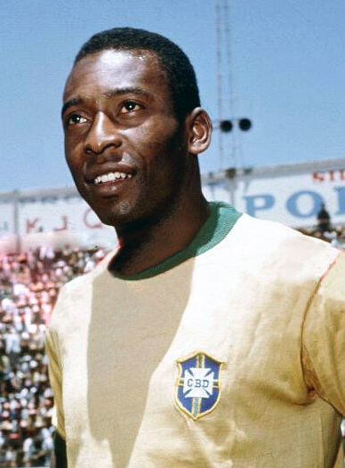
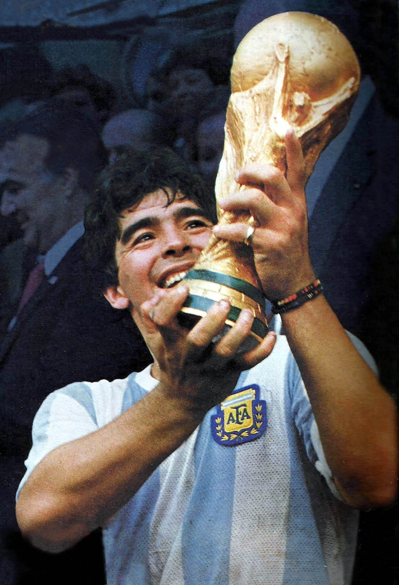
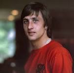
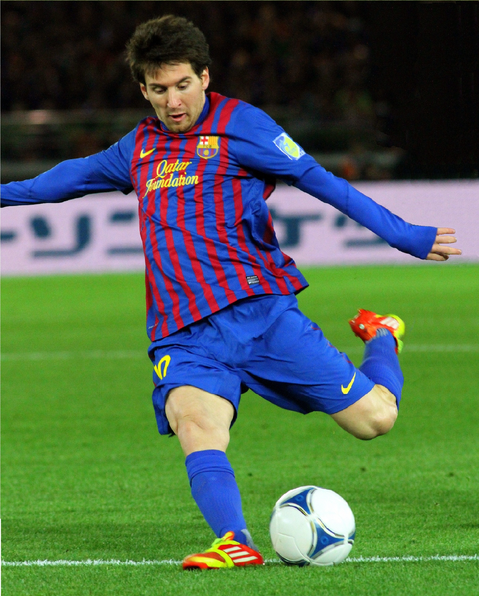
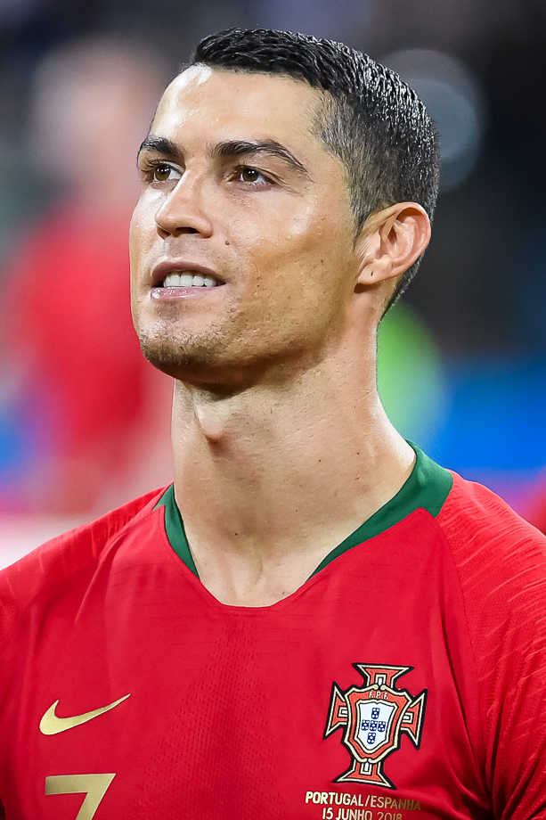

Toplam Sonuç: 5

Ülke: Brezilya
Doğum: 1940
Mevki: Forvet
Kulüpler: Santos, New York Cosmos
Başarı: 3 Dünya Kupası
Pelé futbolun ilk küresel yıldızlarından biri olarak kabul edilir. Brezilya Milli Takımı ile üç kez Dünya Kupası kazanmış ve attığı gollerle futbol tarihine adını altın harflerle yazdırmıştır.

Ülke: Arjantin
Doğum: 1960
Mevki: On Numara
Kulüpler: Boca Juniors, Barcelona, Napoli
Başarı: 1986 Dünya Kupası Şampiyonu
Maradona üstün teknik becerileri ve oyun görüşüyle futbol tarihinin en etkili oyuncularından biri kabul edilir. Özellikle 1986 Dünya Kupası'nda gösterdiği performans ile unutulmaz bir miras bırakmıştır.

>Ülke: Hollanda
Doğum: 1947
Mevki: Forvet
Kulüpler: Ajax, Barcelona
Başarı: 3 Ballon d'Or
Johan Cruyff modern futbolun gelişiminde önemli rol oynayan bir futbolcu ve teknik direktördür. Toplam Futbol anlayışının dünyaya yayılmasında büyük katkılar sağlamış ve günümüz futbol taktiklerini etkilemiştir.

Ülke: Arjantin
Mevki: Forvet
Kulüpler: Barcelona, PSG, Inter Miami
Başarı: 2022 Dünya Kupası Şampiyonu
Futbol tarihinin en başarılı oyuncularından biri olarak kabul edilir.

Ülke: Portekiz
Doğum: 1985
Mevki: Forvet
Kulüpler: Sporting CP, Manchester United, Real Madrid, Juventus, Al Nassr
Başarı: 5 Ballon d'Or, Avrupa Şampiyonluğu, Şampiyonlar Ligi rekorları
Cristiano Ronaldo futbol tarihinin en üretken golcülerinden biridir. Kariyeri boyunca birçok ülkede forma giymiş ve yüzlerce gole imza atmıştır. Hızlı oyun yapısı, hava toplarındaki etkinliği ve disiplinli çalışma anlayışıyla tanınmaktadır.